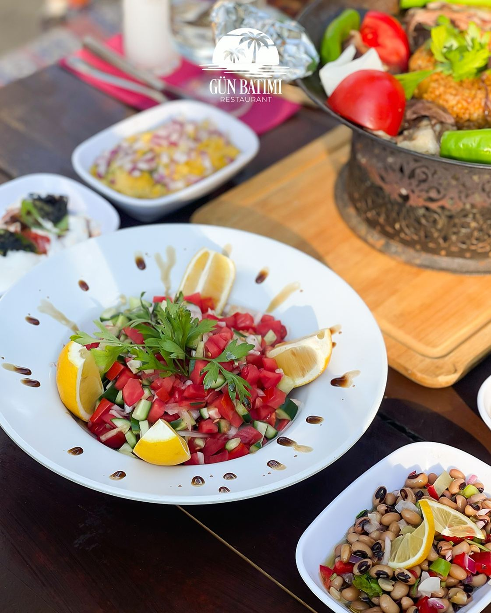

Sütlaç
Fırınlanmış.
QR Menü
Akşam kapanışı. Günlük tatlı tezgâha bağlıdır.
Mangal paketi fiyatı işletmenin Instagram duyurusundan alınmıştır. Diğer başlıklar restoranın Ege sofrası ve ızgara çizgisine göre düzenlenmiş bölümdür; porsiyon ve fiyat masada netleşir. Alerjen için ekibe sorun.
Fırınlanmış.
Sıcak servis.
Antep fıstıklı dilim.
Karpuz, kavun, mevsimine göre.
